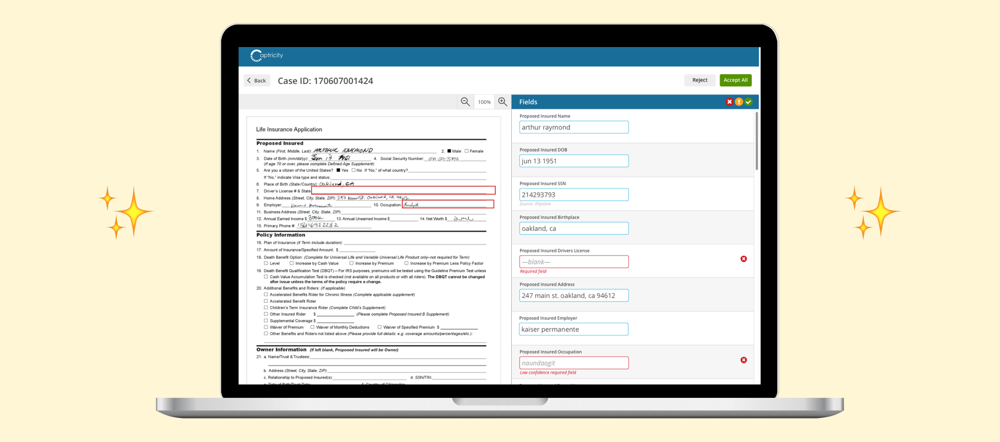

Human feedback loop for ML-based digitization

PROBLEM CONTEXT: Company growth challenge, customer workflow gap
Captricity’s core product automated insurance workflows by using machine learning to digitize handwritten data from paper forms. However, we were not yet an end to end solution - our offering contained a major gap. We had no way to store partial data to be repaired before being submitted downstream. At the current state, if a form contained even one piece of invalid data in a single field, the entire form had to be kicked out.
Captricity’s throughput was low and there was no solution in place to repair the partial data. These rejected forms were sent back to the customer for their staff to manually key in - creating duplicate efforts. The majority of these forms, even with the duplicate human work, were not able to be submitted downstream. The result was that our clients had to tell their customers to start from scratch with a blank form. This was a bad customer experience that prolonged the application process and caused potential customers to drop off.
HYPOTHESIS: A streamlined workflow that strengthens machine learning
Captricity’s machine learning technologies are so advanced because of our foundational understanding that human input is required to achieve the best results. An interface for viewing and repairing invalid forms would elevate our offering in the following ways.
- Enable ML contribution: CaseCorrect is the missing piece to an ML-only digitization path. Accuracy could be obtained at the same level we were currently offering, but with a much faster turnaround time at a more competitive price point. The human feedback in CaseCorrect can train our OCR engines to increase accuracy.
- Reduce cycle time: Forms marked as invalid by Captricity needed to be reviewed for a second time. By providing a way for the partially digitized data to be preserved, a CaseCorrect interface would eliminating duplicate efforts of manually re-keying entire forms. The cycle time from application submission to policy issuance could be reduced.
- Increase straight-through processing: the CaseCorrect interface would be able to deliver more forms downstream through a single cycle, kicking less forms out and preventing duplicate work from associates or customers.
- Decrease final error percentage: By creating a more supportive union between automated digitization and human review, CaseCorrect users would be able to more strategically catch errors before they created risk later in the pipeline.
ENSURING PROJECT SUCCESS: User-centered agile development
One of the biggest concerns for this project was whether or not our team was capable of launching a completed V1 product in a three month deadline. We had a first-time PM, a first-time tech lead, and an engineering team that had never before shipped a brand new product for external users. I created a framework for user-centered agile development that was critical to this project’s success.
The most influential piece of this was the user story mapping exercise I facilitated for the PM and tech lead. The benefits of this exercise were visible throughout the project:
- Context. By understanding the users and their challenges and goals, engineers were able to pursue solutions that were more closely relevant to the user.
- Focus. I was able to prevent scope creep within a sprint because engineers had visibility into every step of the project. Expectations around iterative design were noted upfront so engineers were able to buy into the agile development process, trusting that all of the tasks had been allocated a strategic time to be worked on.
- Intentional milestones for user testing. By focusing on each consecutive step of the user flow, we enabled incremental user testing throughout development. An example of how this worked for this project: The simple dashboard screen was worked on first and complex interactions of the tool were slated toward the final sprints. This maximized iterations without causing rework. I was able to refined final designs to reflect multiple rounds of user testing.
After the project, the VP of Product, who I reported to, shared the following reflection on the impact of my contribution:
“Launching an alpha product was a very critical strategic initiative for Captricity, and the CaseCorrect launch at MetLife would not have been possible without you. Your contributions to the project go well beyond delivering an elegant UI - you created a transparent, open culture within your scrum team to drive everyone to efficiency, you iterated on the design to fit the available scope, you engaged users diligently for feedback but filtered through just enough to create an amazing UX without pushing back the timeline.”
USER TESTING: Consistent feedback for iterative design
At the project launch, a small team flew to the customer site to kick off the project. There, I was able to shadow the current workflow, validate a list of assumptions, and introduce future users to early mockups to familiarize them with the project in person before our remote sessions. This trip enabled me to start the project with a comprehensive understanding the problem in the greater context.
During the initial customer onsite, I explained the expectation and value of user testing for the project’s success and MetLife agreed. We set a timeline for regular user testing check-ins and I met remotely with users from each of the offices involved in the alpha rollout.
I wound up conducting 15 total sessions with 8 unique users over the three month course of the project. Each round of testing brought a deeper amount of fidelity to the prototype and a wider breadth of reliable feedback.
Round 1
Overview: At this stage of fidelity, the tester was shown a simple mock up. The limitation of feedback at this stage was that a tester had nothing to tangibly interact with. All feedback was given verbally via visual observation. The goal at this stage was to find ways to increase alignment regarding assumed functionality.
Insights:
- Most familiar UI elements: navigation methods, terminology, iconography
- Custom expectations for their workflow
Round 2
Overview: At this stage of fidelity, the testers were shown a mock up and given screen control. The limitation of feedback at this stage was that testers could move their mouse and attempt to click, but without receiving a response from the prototype. At this stage, physical observations helped reinforce verbal feedback. The goal at this stage was to validate initial assumptions with more testers and to start picking up on navigation assumptions.
Insights:
- Discoverability concerns
- Bloat in functionality, can cut scope to most impactful for V1
- Uncertainty from users

Round 3
Overview: At this stage of fidelity, the testers were shown a limited prototype. Testers had to experience the product within the limitations of the hotspots provided. Feedback based on user actions had the potential to be misleading because the full range of interactions was not yet available to the testers. The goal for Round 3 was to test intuitiveness and adoptability of features.
Insights:
- Weaknesses in locking feature for preventing duplicate work
- Large image view should be removed

Round 4
Overview: At this stage of fidelity, the testers were shown a coded prototype with dummy data. Although basic functionality was now available for the first time, the build was still in progress, so some features were still incomplete. The goal at this stage was to identify the standard user flow and identify ways to reconcile the product to that The main focus was on testers autonomously completing the following task: Select one case to review and decide whether or not it should be accepted or rejected.
Insights:
- Need for more robust interactions
- Actual user flow under-supported by current state of product

MAJOR INSIGHT: Adapting the product to the most efficient user flow
I extracted the processing time for each task for the last half of my user testing sessions. My decision to do so directly contradicted the customer’s desire from the start of the project, but this data helped quantify and leverage my decision to rework the tool’s flow.
The Final Flow
Step 1: Scan form image
- Clicking the box on the form will jump to the field in the list view
- Detected errors are permanently outlined in red on the form to immediately draw the user’s attention
Step 2: Review errors
- Focus on the errors Captricity has flagged
- Eliminate time spent “hunting” for errors in the entire field list
Step 3: Review all fields
- Optional feature for conducting 100% review of form
- Last step because likelihood that errors remained undetected is low
REFLECTION: Immediate successes and setup for latent AI application
The alpha launch was an immediate success. Within the first few months, MetLife was seeing 35% higher throughput volume - a 50% increase over the initial success metric we had agreed upon. They renewed and agreed to a press release.
After the initial launch it was clear the UI could be leveraged for other customer-facing tasks. The PM was interested in bringing the tool into the setup phase for data accuracy review. I evaluated our current data accuracy process and worked with our customer-facing team to simplify the internal work they had had sole responsibility for. I designed an experience that would be intuitive and uncomplex to customer users to be able to commit to. The setup tool was immediately successful once launched. It shortened the feedback cycles while making feedback easier to understand and act on. It also served as a gateway to get customer stakeholders using the original CaseCorrect in production.
A stretch dream for this feature is to leverage the human review happening in CaseCorrect with latent AI. Instead of just using human feedback to improve our ML models’ exact transcription OCR results, we are exploring how AI can evaluate the human edits to a depth that allows AI to predict what transformations need to happen to that data to automatically transform. This could eliminate the need for human configuration of post-processing.
Other Work
Partner-enabled data configuration for enterprise

Mobile functionality for an end to end experience